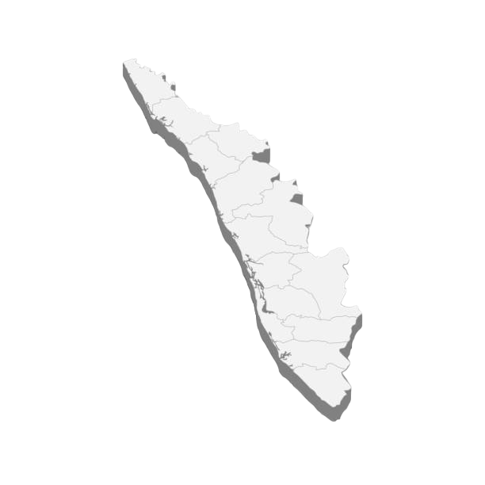

KERALA
KERALA
Thiruvananthapuram

Thiruvananthapuram

Ambalappuzha Sree Krishna Swamy Temple is an Indian Hindu temple dedicated to Krishna at Ambalappuzha in Alappuzha district of Kerala. The temple is believed to have been built during 15th century CE by the local ruler Chembakasserry Pooradam Thirunal-Devanarayanan Thampuran. It is one of the seven greatest temples in Travancore. It is considered one among the 108 Abhimana Kshethram of Vaishnavate tradition.
The idol at Ambalappuzha is likened to Parthasarthi form of Vishnu, holding a whip in his right hand and a conch in his left. During the raids of Tipu Sultan in 1789, the idol of Sri Krishna from the Guruvayoor Temple was brought to the Ambalappuzha Temple for safe keeping for three years.
Payasam, a sweet pudding made of rice and milk is served in the temple and is believed that the Lord Guruvayoorappan visits the temple daily to accept the offering.

The Padmanabhaswamy Temple is a Hindu temple dedicated to Vishnu in Thiruvananthapuram, the capital of the state of Kerala, India. It is one of the 108 Divya Desams which are considered the sacred abodes of Vishnu in the Sri Vaishnava tradition. The name of the city of 'Thiruvananthapuram' in Malayalam and Tamil translates to "The City of Ananta" (Ananta being a form of Vishnu). The temple is built in an intricate fusion of the Kerala style and the Dravidian style of architecture, featuring high walls, and a 16th-century gopuram. While as per some traditions the Ananthapura temple in Kumbla in Kasaragod district in Kerala is considered as the original spiritual seat of the deity ("Mulasthanam"), architecturally to some extent, the temple is a replica of the Adikesava Perumal temple in Thiruvattar in Kanyakumari district in Tamil Nadu. It is widely considered the world's richest Hindu temple.
The principal deity is Padmanabhaswamy, a form of Vishnu enshrined in the "Anantashayana" posture, engaged in eternal yogic sleep on his serpent mount, Shesha. Padmanabhaswamy is the tutelary deity of the Travancore royal family. The titular Maharaja of Travancore, Moolam Thirunal Rama Varma, is the current trustee of the temple.

The Attukal Bhagavathy Temple is a Hindu shrine located at Attukal in Kerala, India. It is situated near the heart of the city, two kilometres away from the Padmanabhaswamy Temple, East Fort, in Thiruvananthapuram. The goddess of the temple is identified with Bhadrakali, mounted over a vetala. She is also identified with Kannagi, the heroine of Ilango Adigal's epic Cilappatikaram.
The temple is renowned for the annual Attukal Pongal festival, in which over three million women participate. A festival that has figured in the Guinness Book of World Records for being the single largest gathering of women for a religious activity, the Attukal Pongala continues to draw millions of women with each passing year. Devotees believe that all of their wishes are fulfilled by the goddess, whose worship can allow them to attain salvation. The goddess is often venerated as all three goddesses of the Tridevi: Saraswati, Lakshmi, and Parvati.

Ettumanoor Mahadeva temple is an ancient Shiva temple in Kottayam, Kerala, India. Temple tradition has it that the Pandavas and the sage Vyasa had worshipped at this temple. The name of the place has its origin from the word manoor, which means "the land of deer." The temple is one of the major Shiva temples in Kerala, along with Vaikom Temple, Chengannur Mahadeva Temple, Kaduthruthy Mahadeva Temple, Ernakulam Shiva Temple, Vazhappally Maha Siva Temple, Vadakkunathan temple and Sreekanteswaram Mahadeva Temple, Thiruvananthapuram.
The present temple building, with its gopuram and the fortress around it, was reconstructed in 717 ME (1542 AD). There are Dravidian mural paintings on the walls inside and outside of the main entrance. The fresco of Pradosha Nritham (Dance of Shiva) is one of the finest wall paintings in India. There is a golden flagstaff inside the temple topped with an idol of a bull surrounded by small bells and metal banyan tree leaves. In terms of architecture, these temples stand out to be an ultimate testament for the Vishwakarma Sthapathis for their engineering skills. The temple roofs are covered with copper sheets, and it has 14 ornamental tops. Bhagavathi, Sastha, Dakshinamoorthy, Ganapathy and Yakshi are installed here as subordinate deities. There is a separate temple for Lord Krishna. It is believed that the philosopher Adi Sankaracharya wrote 'Soundarya Lahari' while staying in the temple.

The Sabarimala Sree Dharma Sastha Temple is a Hindu temple that is devoted to the worship of a deity named Ayyappan, also known as Dharma Shasta. Ayyappan is believed to be the son of Shiva and Mohini (Female avatar of Lord Vishnu). The temple is situated atop a hill in the village of Ranni-Perunad, within the Ranni Taluk of the Pathanamthitta district in the state of Kerala, India. The temple is surrounded by 18 hills in the Periyar Tiger Reserve. It is one of the largest annual pilgrimage sites in the world, with an estimate of over 10 to 15 million devotees visiting every year.
The temple is open for worship only during the days of Mandala Pooja (approximately 15 November to 26 December), Makaravilakku or "Makara Sankranti" (14 January), and Maha Thirumal Sankranti (14 April), and the first five days of each Malayalam month. The Sabarimala pilgrimage includes a unique tradition of offering prayer at the mosque of Vavar, a Muslim devotee of Ayappan. The Sabarimala Temple serves as a prime example of the amalgamation of several religious traditions within the Indian context.

Sree Poornathrayesa temple is a Hindu temple situated in Tripunithura, Kochi, the capital of the former Kingdom of Cochin, Kerala, India. The temple is considered among the greatest temples in Kerala and was the first among eight royal temples of the erstwhile Kingdom of Cochin. The presiding deity is Vishnu as Santhanagopala Murthy or Poornathrayeesa. He was the national deity of Cochin and protector guardian of Tripunithura. Poornathrayeesa is known for his love of elephants. Hence more than 40 elephants participate in his Vrishchikotsavam.
The temple is famous for its yearly utsavams or festivals. The main one is the Vrishchikoltsawam, which is conducted annually in the month of Vrishchikam (November–December), kicking off the Ulsava season in Kerala. It is an eight-day-long festival known for its grandeur of festivities and cultural programmes like Melam (percussion), Kathakali and music concerts.

Guruvayur Temple is a Hindu temple dedicated to Guruvayurappan (four-armed form of the Vishnu), located in the town of Guruvayur in Kerala, India. Administrated by the Guruvayur Devaswom, it is one of the most important places of worship for Hindus in Kerala and Tamil Nadu and is often referred to as Bhuloka Vaikunta (Holy Abode of Vishnu on Earth). The temple is Classified one among the 108 Abhimana Kshethram of Vaishnavate tradition.
The central icon is a four-armed standing Vishnu carrying the conch Panchajanya, the discus Sudarshana, the mace Kaumodaki, and a lotus with a tulasi garland. This image represents the form of Vishnu as revealed to Krishna's parents Vasudeva and Devaki around the time of his birth. Worship proceeds according to routines laid down by Adi Shankara and later written formally in the Tantric way, the inter-religious spiritual movement that arose in medieval India, by Chennas Ravinarayanan Nambudiri (1427-1527), whose descendants are the hereditary tantris (high priests) of the Guruvayur Temple.

The Vadakkumnathan Temple is an ancient Hindu temple dedicated to Shiva in Thrissur, in the Thrissur district of Kerala, India. The temple is a classical example of the architectural style of Kerala and has one monumental tower on each of the four sides in addition to a koothambalam. Mural paintings depicting various scenes from the Mahabharata can be seen inside the temple. The shrines and the Kuttambalam display vignettes carved in wood. The temple, along with the mural paintings, has been declared as a National Monument by India under the AMASR Act. According to popular local lore, this is the first temple built by Parashurama, the sixth avatar of Vishnu. Thekkinkadu Maidan, encircling the Vadakkumnathan Temple, is the main venue of the renowned Thrissur Pooram festival.f
In 2012, the Archaeological Survey of India (ASI) has recommended 14 sites, including Vadakkumnathan Temple and palaces, from Kerala to include in the list of UNESCO World Heritage Sites.[5] The temple is also the first one among the 108 Shiva Temples in ancient Kerala, established by Parashurama, and is mentioned in the Shiva Temple Stotra as Shrimad-Dakshina Kailasam, meaning 'Mt. Kailash of the South'